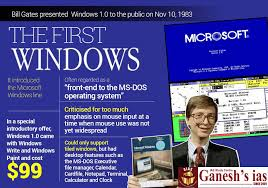

Co-Founder of Microsoft
I’m Bill Gates, a technologist, entrepreneur, and philanthropist. I co-founded Microsoft to help make personal computing accessible and practical for people around the world. Today, my work focuses on philanthropy through the Bill & Melinda Gates Foundation, where I concentrate on global health, education, and climate change. I believe thoughtful innovation and long-term thinking can help solve some of the world’s most important challenges.
Strategic guidance on public health initiatives and disease prevention to improve health outcomes worldwide.
Learn moreExpert advice on software development and digital transformation to solve complex problems.
Learn moreSolutions for climate challenges and sustainable development strategies for organizations.
Learn more
Co-founded and led the development of Microsoft Windows, revolutionizing personal computing and making technology accessible to millions worldwide.
Directed large-scale programs through the Bill & Melinda Gates Foundation to improve health outcomes, eradicate diseases, and reduce poverty globally.
Developed innovative approaches to climate innovation and sustainability, working with governments and organizations to address environmental challenges.
© Bill Gates. All rights reserved.